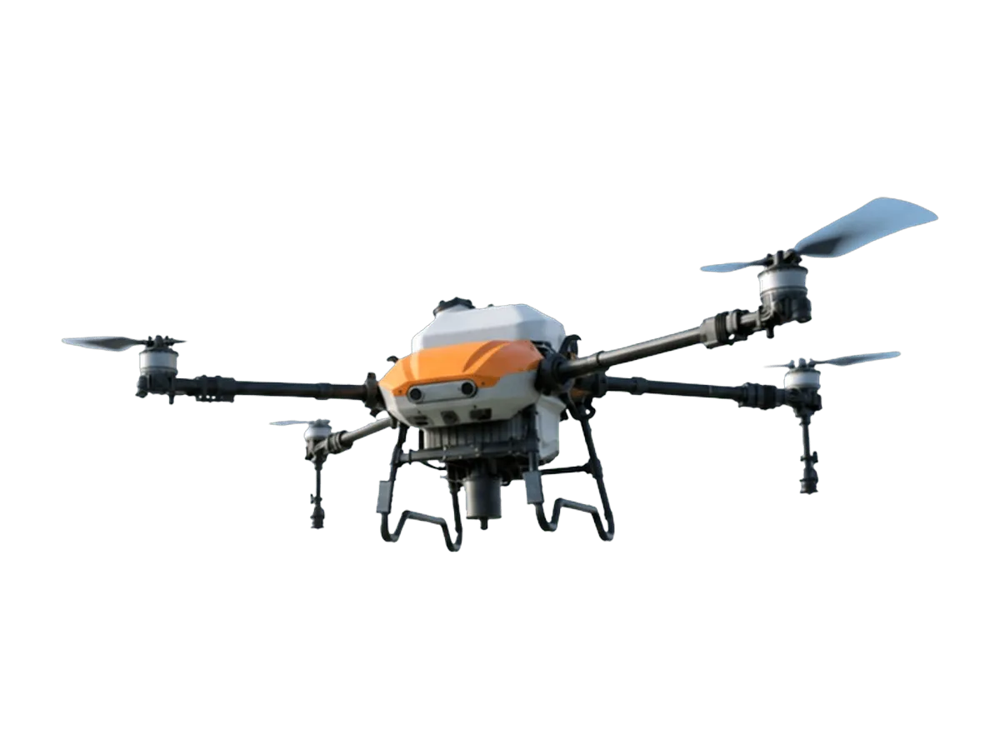

Drone Pertanian
VectorAgr V80
Agricultural Drone
Drone pertanian VectorAgr V80 adalah model generasi baru yang ditingkatkan secara menyeluruh untuk efisiensi, tenaga, dan keselamatan, dengan tangki semprot 70 L dan tangki tebar 100 L.
Keunggulan
- Tangki semprot 70 L mengurangi frekuensi isi ulang sehingga operasi lebih lama dan produktif
- Laju aliran hingga 40 L/menit, lebih banyak hektar tercakup di setiap penerbangan
- Sistem persepsi dual vision dan radar 360° untuk deteksi rintangan dan pengikut medan yang presisi
- Tangki tebar 100 L untuk benih, pupuk, dan material granul dengan sebaran merata
- Remote HD multifungsi dengan transmisi 2 km dan modul 4G untuk komunikasi yang lebih andal
- Sistem energi pengisian ultra cepat dengan manajemen panas optimal untuk kerja intensif
Spesifikasi
| Model Produk | 3WWDZ-U70A |
|---|---|
| Konfigurasi Rotor | 4 lengan |
| Dimensi (Terbuka) | 3597 × 3337 × 871 mm |
| Dimensi (Terlipat) | 1244 × 860 × 928 mm |
| Wheelbase Maksimum | 2652 mm |
| Berat Lepas Landas Maksimum | 142.5 kg (32 Ah) / 144.2 kg (38 Ah) |
| Berat Kosong (Tanpa Baterai) | 58 kg |
| Kapasitas Tangki Semprot | 70 L |
| Kapasitas Tangki Tebar | 100 L |
| Muatan Semprot | 70 kg |
| Laju Aliran Maksimum | 40 L/min |
| Lebar Semprot Efektif | 12 m |
| Jenis Nozel | Nozel sentrifugal × 2 (standar) / × 4 (opsional) |
| Ukuran Droplet | 50–500 μm |
| Akurasi Posisi RTK | H ±10 cm, V ±10 cm |
| Waktu Hover (Tanpa Muatan) | 16 min |
| Waktu Hover (Muatan Penuh) | 5.5 min |
| Baterai | HE102, 32 Ah / 38 Ah, 67.5 V |
| Charger | HE202, 9000 W (generator) / 2000 W (jaringan listrik) |
| Remote Control | HD402 |
| Layar Remote | 6", 1280 × 720 |
| Jangkauan Transmisi Gambar | >3 km (SRRC), 3 km (CE), 2.5 km (FCC) |
| Daya Tahan Remote | ≥7 h |
| Kamera FPV | 1280 × 720, monokuler + binokuler, night vision |
| Radar Penghindar Rintangan | Radar putar 360° + radar belakang |
| Kecepatan Penghindaran Maks. | 18 m/s |
Tanya harga & ketersediaan unit
Tim kami siap membantu memilih unit yang sesuai kebutuhan lahan Anda.